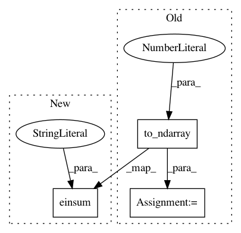

14fd77cdb57fda801252e7768e999f4f7154ad21,examples/learning_graph_structured_data_h2.py,,loss,#Any#Any#Any#Any#,67
Before Change
manifold.metric.squared_dist(
reshaped_example_embedding, negative_embedding)
negative_distance =\
gs.to_ndarray(negative_distance, to_ndim=2, axis=-1)
negative_loss = log_sigmoid(negative_distance)
total_loss = -(positive_loss + negative_loss.sum())
positive_log_sigmoid_grad =\
-grad_log_sigmoid(-positive_distance)
positive_distance_grad =\
grad_squared_distance(example_embedding, context_embedding)
positive_grad =\
gs.repeat(positive_log_sigmoid_grad, dim, axis=-1)\
* positive_distance_grad
negative_distance_grad =\
grad_squared_distance(reshaped_example_embedding, negative_embedding)
negative_log_sigmoid_grad =\
grad_log_sigmoid(negative_distance)
negative_grad = negative_log_sigmoid_grad\
* negative_distance_grad
example_grad = -(positive_grad + negative_grad.sum(axis=0))
return total_loss, example_grad
After Change
grad_squared_distance(example_embedding, context_embedding)
positive_grad =\
gs.einsum("i, i...->i...", positive_log_sigmoid_grad,
positive_distance_grad)
negative_distance_grad =\
grad_squared_distance(reshaped_example_embedding, negative_embedding)
In pattern: SUPERPATTERN
Frequency: 4
Non-data size: 3
Instances
Project Name: geomstats/geomstats
Commit Name: 14fd77cdb57fda801252e7768e999f4f7154ad21
Time: 2020-04-23
Author: gerald@pop-os.localdomain
File Name: examples/learning_graph_structured_data_h2.py
Class Name:
Method Name: loss
Project Name: geomstats/geomstats
Commit Name: 3649662e14d5858ea5e86b18540bd52bcafbb4c6
Time: 2020-01-24
Author: nicolas.guigui@inria.fr
File Name: geomstats/geometry/connection.py
Class Name: Connection
Method Name: geodesic_equation
Project Name: geomstats/geomstats
Commit Name: 61a9bbf31b58051db923cd437be809b74ebafb0a
Time: 2020-01-28
Author: nicolas.guigui@inria.fr
File Name: geomstats/geometry/connection.py
Class Name: Connection
Method Name: geodesic_equation
Project Name: geomstats/geomstats
Commit Name: cdc013766a961e645e6e0e5284d18f9f2153b933
Time: 2018-05-09
Author: ninamio78@gmail.com
File Name: geomstats/hyperbolic_space.py
Class Name: HyperbolicMetric
Method Name: log